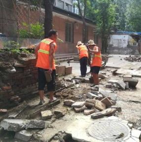

科春圃子
科春圃子位于北京市海淀区中关村街道的科春社区，是一个老旧小区,小区内楼房多为五六十年代建造，路面、墙面、地面老化破损严重，设施设备落后。出租房屋多，外来人员多，老年人居多，为一复合型社区。为了进一步完善社会协同、公众参与、共建共享的社区治理格局，从2018年开始，科春社区对中关村50楼南侧的公共区域进行治理改造，践行尊重自然的永续设计方案，经过四年多的持续治理营造，最终将垃圾死角变身为集居民教育、科普、休闲为一体的科春口袋公园——“科春圃子”。
科春圃子所在位置曾经是私搭乱建、垃圾杂物乱扔的公共区域，存在严重的安全隐患。
科春社区居委会借助街道改造契机，拆除此处违章建筑后，利用党组织服务群众经费进行了地面硬化、墙面美化，划出绿化花坛和种植小方格。
- 
征求居民们建议，开展居民座谈，发动居民参与社区服务，关注社区公共事务，参与社区营造。邀请专业美术教师、居民志愿者们进行墙体彩绘。
发动社区居民志愿者，在景观设计师的指导下开展了一系列圃子营造活动，并组建了科春圃子志愿养护队，以集体志愿行动来处理居民共同面对的社区生活议题，解决问题的同时，营造共同的生活福祉。

把科春圃子营造成为科春社区的自然教育基地、科普基地、休闲小天地。

从表面上看是科春圃子的营造活动是对社区居民的居住环境以及生活辐射范围的改变，解决社区当前面临的问题，为居民提供丰富实操的体验活动。其本质是要通过居民共议、共建，改善身边生活环境，营造崇尚志愿服务的浓厚氛围，推动社区志愿服务持续健康发展,激发居民们的内心感受，增强社区的凝聚力、归属感，触发居民参与社区的主观能动性，推动社区居民的团结合作，促进邻里融洽，将居民彼此之间以及居民和社区环境之间建立起紧密的社会联系。
在科春圃子志愿营造项目中科春居委会的社会工作者们积极整合各方资源，鼓励居民参与社区事务，发挥居民潜能，发掘并培养社区志愿者，培养相互关怀、自助互助的美德，建立社区归属感、荣誉感和责任感。充分发挥了社区工作者作为使能者、教育者、中介者和协调者的重要作用，引领居民们有意愿、有能力、有规则地参与到公众事务中，在公众参与的过程中形成志愿组织，实现共建空间的可持续发展机制，提升了社区品质，在城市社区治理中形成一道亮丽的风景线！